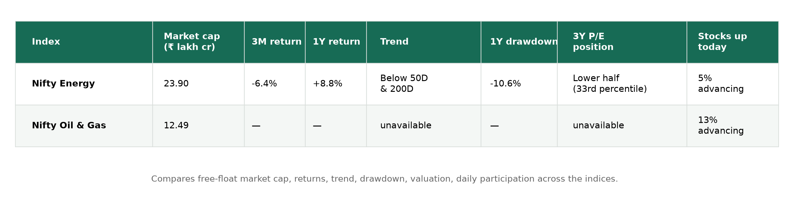
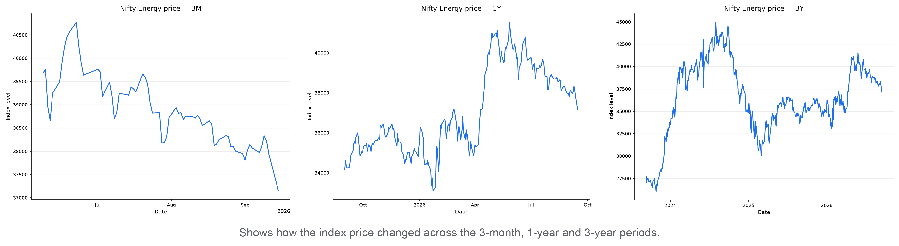
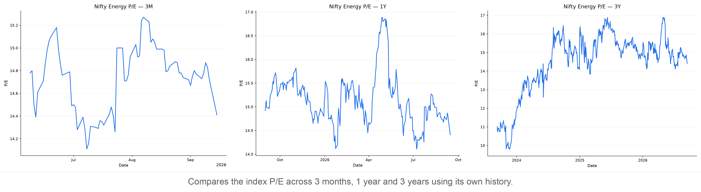
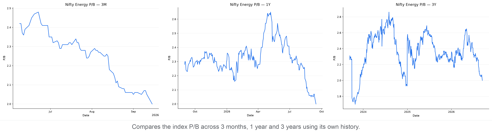
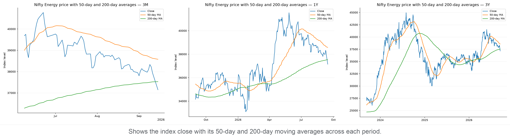
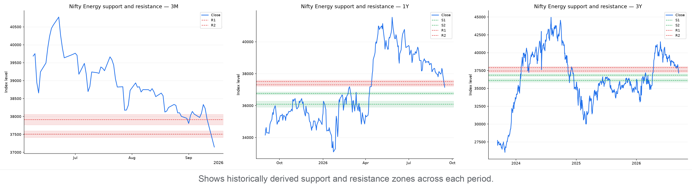
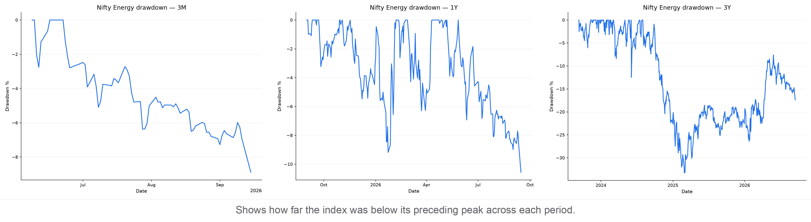
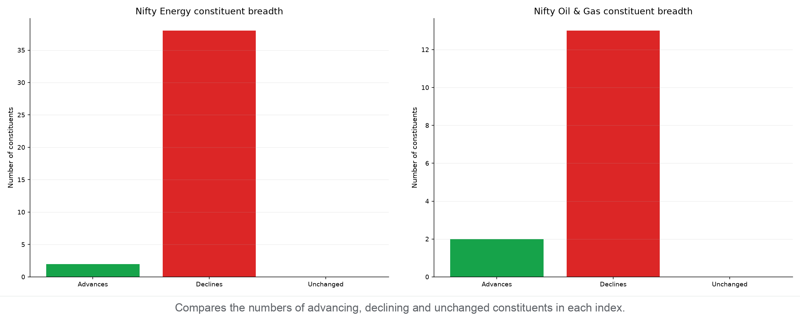

India Energy Pulse — 15 September 2026
A focused view of price trends, valuations, market breadth and pullbacks across India's energy sector.
Contents
- Market at a Glance
- Nifty Energy
- Nifty Oil & Gas
- Market Breadth by Index
- Sources
- Disclaimer
Market at a Glance
A compact comparison of indices.
- Free-float market cap: The value of shares available for public trading. Each value includes its source date in the index section below.
- 3Y P/E position: Compares today's P/E with the index's own three-year history. A low percentile is near its three-year low; a high percentile is near its three-year high.
- Stocks up today: Shows market breadth—the percentage of stocks in the index that rose today.

Nifty Energy
What it represents: Companies spanning petroleum, gas, power and other parts of India's energy economy.
Price: 37,147.95 · Day change: -2.08% · 50D MA 38,579.63 (-3.71%) · 200D MA 37,528.94 (-1.02%) · Free-float market cap: ₹23.90 lakh crore (as of 11 September 2026)
Price
Price return shows how much the instrument rose or fell over each period. Current read — 3M: -6.4% · 1Y: +8.8% · 3Y: +34.0%.

P/E
P/E compares index price with constituent earnings; the percentile shows where today's valuation sits within each period.
3M: 14.41 versus 14.78 median, 21st percentile (lower end)
1Y: 14.41 versus 15.08 median, 8th percentile (lower end)
3Y: 14.41 versus 14.94 median, 33rd percentile (below the middle)

P/B
P/B compares index price with constituent book value; the percentile shows where today's P/B sits within each period.
3M: 2.00 versus 2.28 median, 1st percentile (lower end)
1Y: 2.00 versus 2.31 median, 1st percentile (lower end)
3Y: 2.00 versus 2.36 median, 7th percentile (lower end)

Moving Averages
The 50-day average shows the shorter trend and the 200-day average shows the longer trend. Current read — -3.7% versus the 50-day average; -1.0% versus the 200-day average; the 50-day is above the 200-day (bullish alignment).

Support & Resistance
Zones use confirmed five-bar swing points clustered into 0.5% price bands; distances are measured from today's close.
3M: no confirmed swing-zone support was found below the current close; resistance 37,412–37,598 (0.7% above)
1Y: support 36,674–36,860 (0.8% below); resistance 37,214–37,399 (0.2% above)
3Y: support 36,651–37,032 (0.3% below); resistance 37,214–37,668 (0.2% above)

Drawdown
Drawdown is the percentage below the highest close reached within each chart's own period. Current pullback in context:
3M: Now 8.9% below peak · Worst 8.9% · At this level or lower on 1% of 70 trading days
1Y: Now 10.6% below peak · Worst 10.6% · At this level or lower on 0% of 258 trading days
3Y: Now 17.4% below peak · Worst 33.3% · At this level or lower on 45% of 746 trading days

Nifty Oil & Gas
What it represents: Companies operating across India's oil, gas, petroleum and refining industries.
Price: 10,796.40 · Day change: -1.29% · Free-float market cap: ₹12.49 lakh crore (as of 11 September 2026)
_P/E history is unavailable from the configured sources for this index._
Market Breadth by Index
Market breadth counts how many constituents rose, fell, or were unchanged. It shows whether an index move has broad participation or is being driven by relatively few stocks; it is useful confirmation, not a prediction.
- Nifty Energy: 2 advanced, 38 declined, 0 unchanged — broadly negative (A/D ratio 0.05).
- Nifty Oil & Gas: 2 advanced, 13 declined, 0 unchanged — broadly negative (A/D ratio 0.15).
Breadth Snapshot
Green shows advancing constituents, red declining constituents, and grey unchanged constituents.

Sources
- Yahoo Finance
- Nifty Energy market data (^CNXENERGY): https://finance.yahoo.com/quote/^CNXENERGY
- NSE India
- Index price history: https://www.nseindia.com/api/historicalOR/indicesHistory
- Free-float market capitalization: https://www.nseindia.com/index-tracker/NIFTY%2050
- Index snapshot and market breadth: https://www.nseindia.com/api/allIndices
- Nifty Indices
- Historical P/E and P/B data: https://www.niftyindices.com/BackPage/getpepbHistoricaldataDBtoString